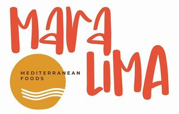

Trade Mark Journal No.2026/007 13 February 2026
WO0000001899474 (29,30)
Office of origin: European Union Intellectual Property Office (EUIPO)
Date of International Registration:19 December 2025
Date of designation in the UK:
19 December 2025

The mark contains the colours red, brown, black and white.
- Class 29
- Meat; fish, not live; deep-frozen poultry; poultry; prepared meals made from poultry [poultry predominating]; game, not live; meat extracts for culinary purposes; fruit, preserved; frozen fruits; dried fruit; cooked fruits; vegetables, preserved; frozen vegetables; vegetables, dried; vegetables, cooked; jellies for food, other than confectionery; jams; compotes; eggs; milk; cheese; butter; yoghurt; milk products; oils for food; prepared meals containing [principally] eggs; prepared meals containing [principally] chicken; prepared meals consisting substantially of seafood; prepared meals consisting primarily of fish; prepared meals consisting principally of vegetables; prepared meals consisting primarily of meat substitutes; frozen prepared meals consisting principally of vegetables; prepared dishes consisting primarily of fishcakes, vegetables, boiled eggs, and broth (oden); prepared meals made from meat [meat predominating]; ready cooked meals consisting wholly or substantially wholly of meat; frozen meals consisting primarily of fish; frozen meals consisting primarily of meat; frozen meals consisting primarily of poultry; frozen meals consisting primarily of chicken; antipasto salads; dairy spreads; legume-based spreads; low fat dairy spreads; smoked fish spread; truffle-based spread products (truffle creams); dried fruit-based snacks; flavoured nuts; candied nuts; salted nuts; ground nuts; roasted nuts; processed fruits, fungi, vegetables, nuts and pulses; peanut butter.
- Class 30
- Coffee; tea; cocoa; coffee substitutes; rice; pasta; noodles; tapioca; sago; cereal preparations; bread; pastries; flour confectionery; chocolate; ice cream; sherbets [ices]; edible ices; sugar; honey; golden syrup; salt; seasonings; spices; preserved herbs; vinegar; sauces; sauces [condiments]; dry and liquid ready-to-serve meals, mainly consisting of rice; rice-based prepared meals; prepared meals in the form of pizzas; prepared meals containing [principally] pasta; dry and liquid ready-to-serve meals, mainly consisting of pasta; frozen pizzas; frozen meals consisting primarily of pasta; frozen meals consisting primarily of rice; savory sauces, chutneys and pastes; pastries, cakes, tarts and biscuits (cookies); ice cream gateaux; nougat cream spreads; chocolate-based spreads; chocolate creams; food mixtures consisting of cereal flakes and dried fruits; pasta sauce; pasta dishes; asian noodles.
MDS Holding GmbH
Representative: SPIEKER & JAEGER, Phoenixseestraße 24, 44263 Dortmund, GERMANY